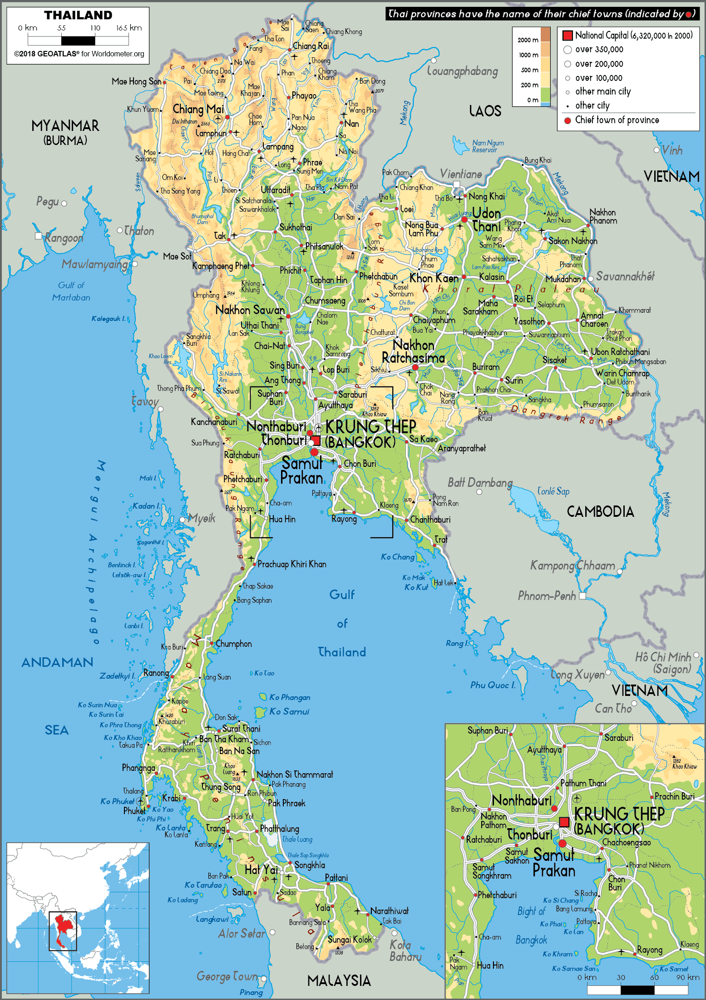
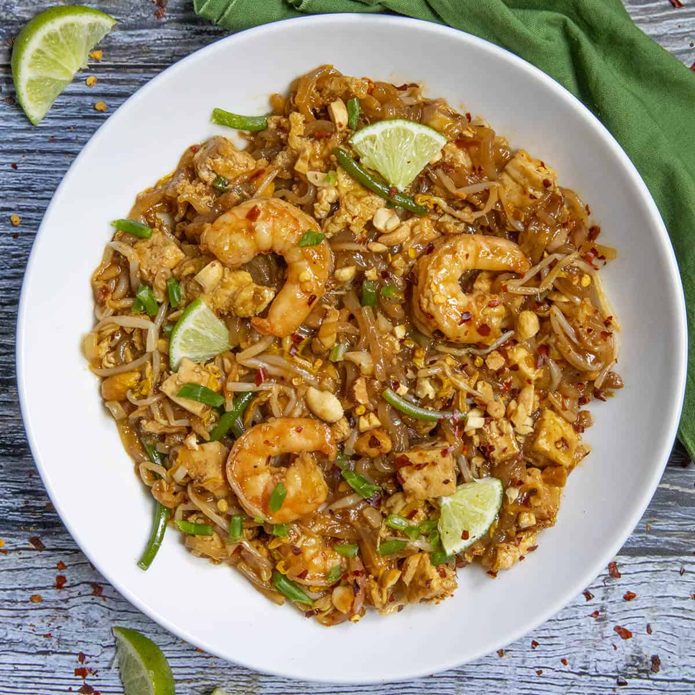
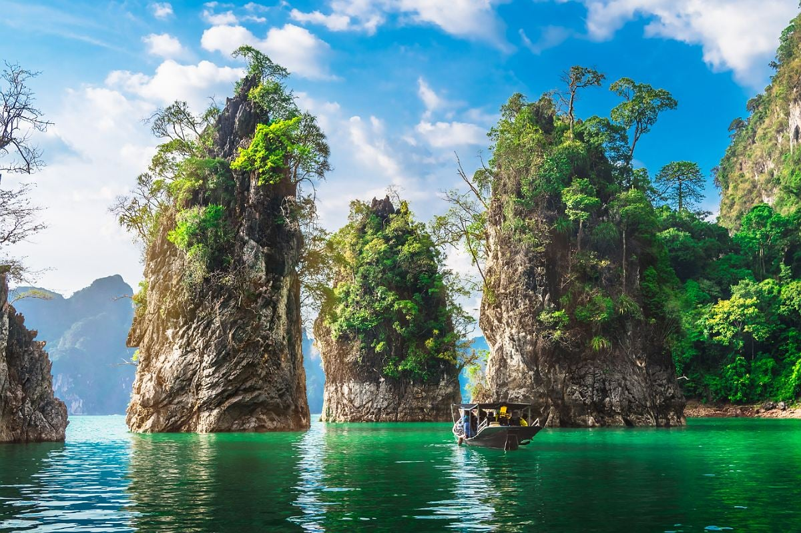

Made by: Birol

Contents:
Where Is Thailand?
Landmarks
Food
School
Holidays
Land
Religion
Climate
Fun Facts
-----------------------------------------------------------------------------------------------------------------------------------------
Where Is Thailand?
Southeast Asia's Thailand is known for its beautiful beaches that line the Gulf of Thailand and the Andaman Sea. It is surrounded by Myanmar, Laos, Cambodia, and Malaysia and provides a cultural tour with vibrant cities, yummy street foods, and historic places such as the Grand Palace in Bangkok.
Map of Thailand:

Landmarks
Surrounded by the liveliness of Bangkok, the capital city of Thailand, three renowned landmarks proudly stand, presenting the historical and cultural richness of the country. The Wat Arun, which is also known as the Temple of Dawn, adds charm to the Chao Phraya River. The Grand Palace, an amazing palace complex, tells the history of the royal family of Thailand. On the other hand, the Wat Pho, which hosts the Reclining Buddha, is a symbol of spiritual grandeur.
Picture of Wat Arun:

Food
The role played by seafood is highly recognized in the Thai cuisine that is characterized by spiciness. The Thai cuisine mainly focuses on different kinds of seafood. Some of the well-know dishes include the Pad Thai, which is a sweet and spicy dish made up of stir-fried noodles, Tom Yum Goong, which is a spicy soup that has lemongrass and shrimps, and Green Curry.
Picture of Pad Thai:

School
In Thailand, the schools generally function between 8:00 AM and 3:00 PM, thereby giving the students a well-defined structure of 12 years of study. The most common thing done by Thai schools is adopting different types of uniforms that differ greatly in color and style, which helps in creating an identity for the students. Not only do the Thai schools teach the students the basic subjects, but they also try to incorporate Thai culture, history, and even Buddhism in their curriculum.
Holidays
While there are many festivals celebrated by the Thai people, three particular festivals come to mind specifically: the Songkran Festival in April which involves water fights to represent cleansing; the Loi Krathong Festival in November where decorative baskets are floated to pay homage to the water spirits; and the King Bhumibol Memorial Day on 5th December.
Picture of the Songkran Festival:

Land
The geography of Thailand provides a variety of landscapes. Immense plains can be found in the center of the country, which merge into extensive agricultural lands. In the north, the country features impressive highland mountains. The northeast part of Thailand consists of a plateau, creating an impression of boundless calmness, while the southern peninsula of the country features light-blue water on its coast. Finally, the western region boasts spectacular mountain views and valleys of rivers.
Picture of the Thailand landscape:

Religion
One of the key religions in Thai culture is Buddhism which plays the role of the dominant religion with the help of its rituals and ceremonies which define a unique lifestyle that reflects the deep spirituality of Thai people who trace back their roots to this religion. Moving to the south of the country, one can see how Islam becomes one of the key influences on the development of culture there and adds another important layer to the whole cultural image of the country. In terms of the expansion of the religious influence in Thailand, one should mention Christianity, namely Catholicism and Protestantism, which have their presence in the country. While being a minority, Christian groups make their contribution to the spiritual life of Thai people through their traditions and festivities. Thus, the interaction of all these religions creates the cultural and religious identity of the country, bringing together different cultures and beliefs.
Climate
Thailand has a tropical climate which features warm weather and high humidity all year round. The average annual temperature in Thailand is 82°F (28°C) whereas the average highest temperature is 86°F (30°C) and average lowest temperature is 73°F (23°C). The highest temperature in Thailand recorded on April 27, 2016 in Uttaradit province is 112.1°F (44.5°C). On the other hand, the lowest temperature in Thailand recorded on December 28, 1999 in Sakhon Nakhon is 29.5°F (-1.4°C). Thailand has three types of seasons including the hot season between February and May, rainy season between May and October because of southwest monsoon and cool season between October and February because of northeast monsoon.
Fun Facts